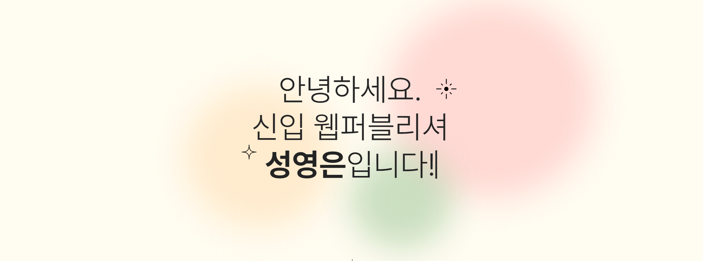
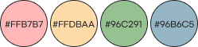
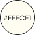

Portfolio
포트폴리오 페이지를 기획하고 구현하여 제작한 프로젝트를 소개한다.


포트폴리오 페이지를 기획하고 구현하여 제작한 프로젝트를 소개한다.
포인트 색상
배경 색상
→ div로 요소들을 세세하게 나누고 배치하여 위치 배정에 용이하도록 수정하였다.
→ 어둡게 하기, 돋보기 효과 나타나기 등 여러 가지를 적용해보다가 흑백에서 컬러로 변하게 하는 것으로 선택하였다.